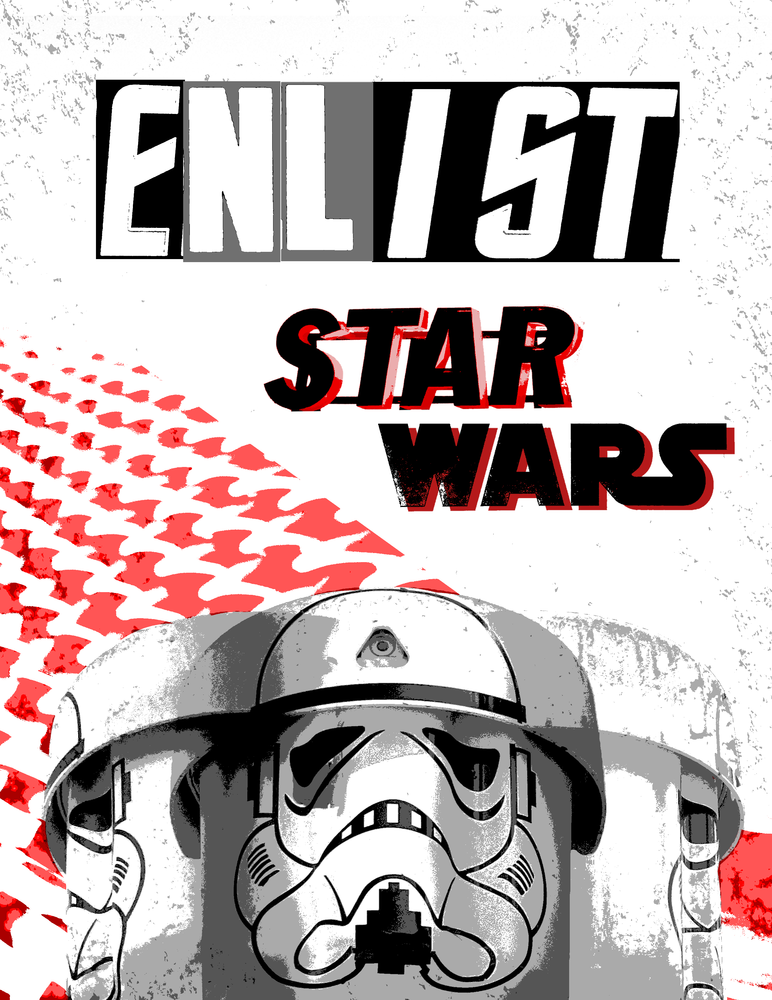
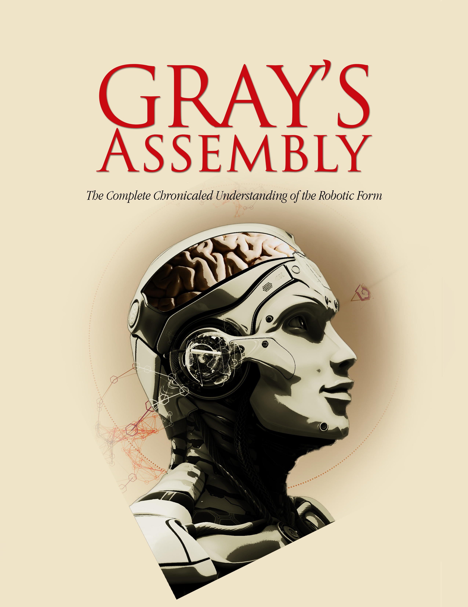
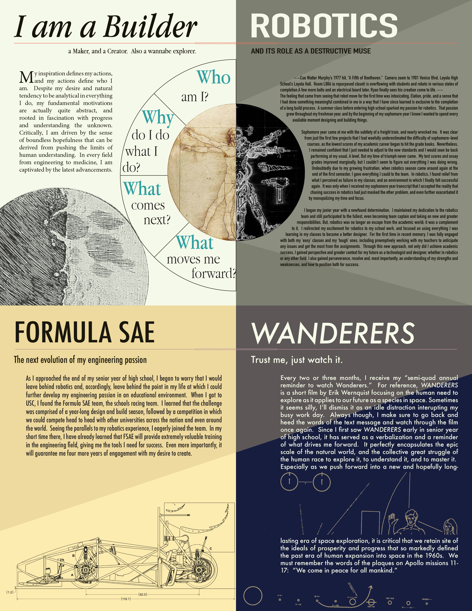

Enlist is a collage work constructed from photos taken around the USC campus. My goal was to utilize the environmental textures from the photographs to create an aged, dystopian aura about the piece. Layering and a restricted pallet work together to highlight these textures.
Graphic Design
Enlist

Gray's Assembly

Gray's Assembly was created in response to the prompt of "organic cyborg." It is another collage work. My goal with the piece was to subvert the traditional concept of a cyborg. The title suggests a complete cycle between organic and artificial life where artificial life begins to enhance itself with organic components.
Editorial Exercise

This work is an editorial design project which traces my base motivations in life. From robotics to space travel, the concepts of creating and discovering the unknown drive me to succeed. My goal was to highlight elements from various areas about which I am passionate in order to create a multi- page, cohesive viewing experience.